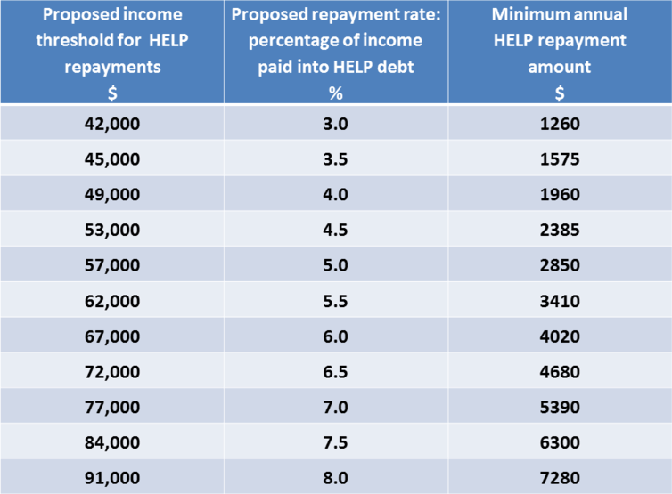
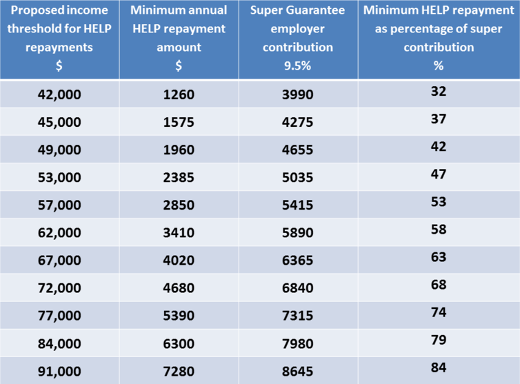

Since it began more than 25 years ago, the Higher Education Loan Program (HELP) has been generally safe for university students and cost-effective for governments.
The scheme avoids US-style debt traps, where student loans attract real rates of interest and must be repaid regardless of income. In 2014, Nobel prize winner Joseph Stiglitz described the Australian scheme as “the envy of the rest of the world. It works.”
But HELP now faces growing public costs. After Education Minister Simon Birmingham dubbed it “one of the most generous loan schemes in the world”, reforms are expected in the May budget.
Nightmare on HELP street?
Last week saw alarmist reporting of a Parliamentary Budget Office (PBO) report which estimates that total HELP debt might balloon to A$185 billion by 2026.
First, the PBO estimates that, over the decade to 2026, net HELP debt held by the government may rise from $13 billion currently to $48 billion. In underlying cash terms, the estimated annual cost of the whole loan portfolio may rise from $1.7 billion this year to $11.1 billion in 2026.
Second, these projections use working assumptions that may not eventuate over the coming decade:
- University course places remain fully uncapped, and funded enrolments grow by a third.
- New legislation uncaps fees from 2017 and average prices rise by 40% initially to offset subsidy cuts of 20%; and uncapped prices continue, rising to reach 60% of total revenue per place by 2026.
- The annual interest rate subsidies on loans eventually repaid rise from less than 1% now to reach 3.5% by 2026; while unrepaid loans also face compound interest increases, in this case at rates of up to 6% by 2026.
Third, the PBO estimates don’t balance these costs with any budget savings estimate from the proposed 20% cut to public grants for course subsidies. These may amount to $1 billion a year in the early years, and $2 billion or more in later years, if funded enrolments grow as projected.
As ANU economist Bruce Chapman reported this week, the PBO estimates are “not extrapolations of existing realities” but a scenario.
On the other hand, as Chapman noted in 2014 when uncapped fees and subsidy cuts were first proposed, and as his ANU colleague Timothy Higgins now warns, big price hikes remain likely in such a scenario.
Possible reforms to lower public HELP costs
Accepting that HELP debt will be a growing but manageable budget problem, what kinds of changes might we expect in the budget?
Sensible reforms would include recovery of debts from deceased estates with substantial assets, as proposed by the Grattan Institute in 2014.
The PBO report confirms that this is the biggest eventual cost to the scheme, with around 20% of all lending expected to be written off as bad debt. For those in well-off households, this reform would encourage those with earnings below the repayment threshold, who rely on a well-paid partner with earnings above it, to clear their debt voluntarily.
A likely reform would see the adoption of a new, lower set of HELP debt repayment thresholds. A recent Grattan report proposed that repayments could start when incomes reach $42,000 instead of the current $54,000. In cash terms, repayments would flow as shown below.
Accelerated repayment would cut the public cost of the interest rate subsidy built into the scheme, since debts are maintained at zero real interest (indexed to inflation). It would also reduce the debts written off after a lifetime of non-repayment.
Good for the budget, but bad for graduates?
But if adopted as policy, the fairness factor must feature in federal election campaigning later this year. In cash-flow terms, how would lower income graduates afford it?
One way would be to allow them to redirect employer superannuation contributions into HELP debt repayment, for reasons I outlined early last year.
Reportedly, Treasurer Scott Morrison was urged to consider some kind of super-into-HELP option earlier this year. There is now support within Liberal ranks.
The table below shows how repayments at the Grattan report thresholds compare with the super guarantee payments that employers are obliged to make at these income levels.
With an option to direct up to 50% of super contributions into HELP, graduates earning $42,000 to $53,000 could make HELP debt payments each year with zero effect on their cash incomes. At higher incomes of $57,000 to $91,000 they could offset most of the cash impact of higher minimum HELP repayments.
This would offer real flexibility to meet urgent expenses such as outstanding credit card debts.
A likely effect would be more active management of HELP debts, and also of super entitlements where employer compliance is patchy.
In this scenario, innovative super funds could offer “student super” accounts for casual work during study as a recruitment strategy. They could notify students of their HELP repayment capacity each year, and how to time repayments before debts are adjusted for inflation. By accepting lower account balances initially, these funds would gain longer term benefits from wider graduate membership.
Combining a Grattan-type repayment scale with a super option would allow for earlier repayment of HELP loans, with smaller effects on take home pay, and greater flexibility for graduates to manage living expenses early in their careers.